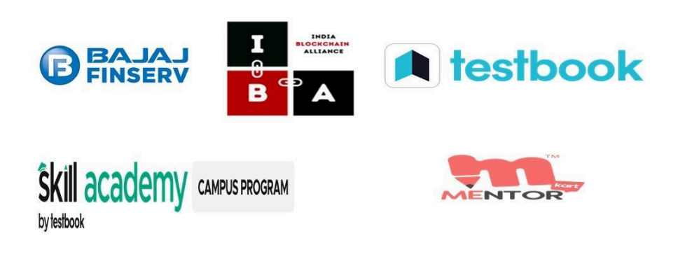

➤ AWS Academy Member Institution
ITM Gwalior alliances AWS Academy to Enhance Students with Industry ready Cloud Computing Skills. This new verge by Gwalior is in coalign with its foresight to include best class industry trending technical courses in its engineering and management programs. According to this program, AWS Certified faculty members of ITM Gwalior will deliver cloud computing, machine learning (ML) and data analytics covering courses.
ITM Gwalior alliances AWS Academy to Enhance Students with Industry ready Cloud Computing Skills. This new verge by Gwalior is in coalign with its foresight to include best class industry trending technical courses in its engineering and management programs. According to this program, AWS Certified faculty members of ITM Gwalior will deliver cloud computing, machine learning (ML) and data analytics covering courses.
ITM Gwalior has partnered with Bajaj FinServ to offer a career-oriented Certificate Program in Banking, Finance, and Insurance (CPBFI). It is extremely important to acquire new knowledge and skills through such programs and be ready for future opportunities.
